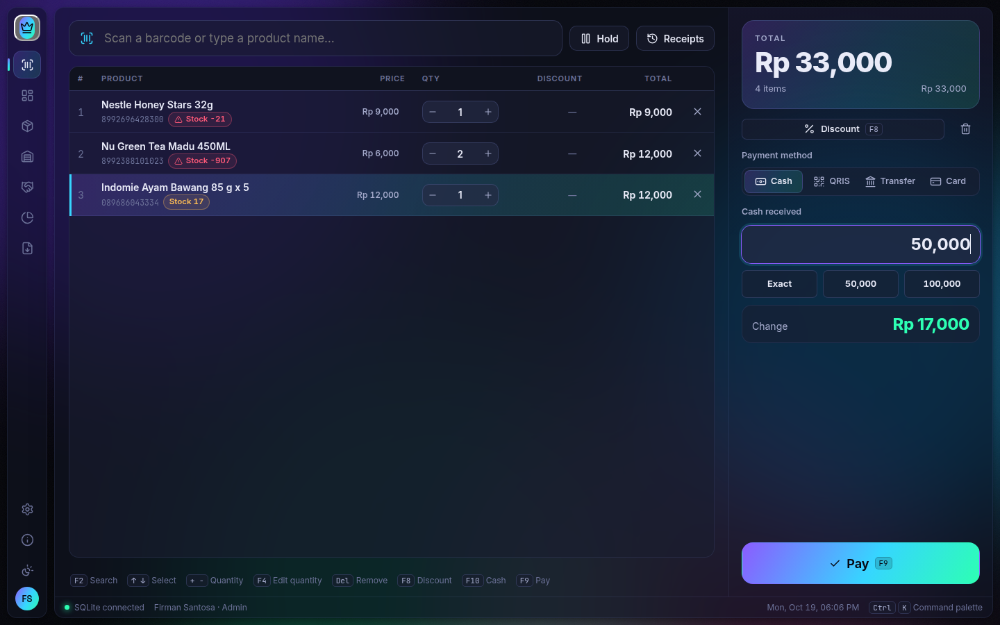
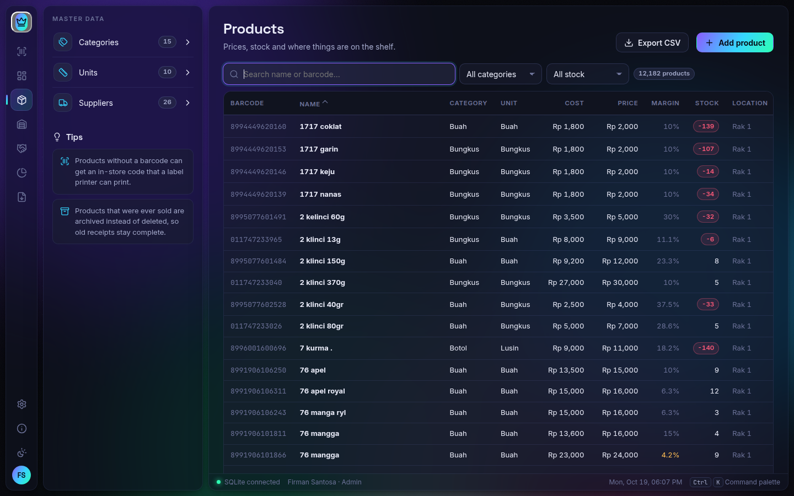

Kasir cepat dengan scan barcode
Scan barcode barang maupun barcode dus, cari nama, beri diskon, bayar tunai / QRIS / transfer / kartu, tahan transaksi — semuanya bisa lewat keyboard.
Raja Kasir adalah software kasir (POS) untuk PC dan laptop Windows maupun Linux — kasir cepat dengan scan barcode, stok barang lengkap, laporan laba, dan tetap berjualan walaupun internet mati. Tanpa biaya bulanan.
Gratis diunduh · coba dulu dengan kunci demo hari ini · lisensi seumur hidup untuk satu perangkat

Dari meja kasir sampai gudang, dari pembelian ke supplier sampai laporan laba — semua fitur program kasir yang dibutuhkan toko ada di sini, tanpa berlangganan.
Scan barcode barang maupun barcode dus, cari nama, beri diskon, bayar tunai / QRIS / transfer / kartu, tahan transaksi — semuanya bisa lewat keyboard.
Kedaluwarsa per batch dengan peringatan di menu dan dasbor, pemusnahan dengan berita acara, stok opname, serta pecah barang dus ke eceran.
Stok per gudang dan rak, barang masuk langsung ke gudang, transfer antar lokasi dengan surat jalan, dan saran isi ulang rak toko.
Purchase order, barang masuk tunai atau tempo, hutang supplier dengan umur hutang, dan retur barang ke supplier.
Data pelanggan dengan poin yang bisa ditukar di kasir, harga khusus member, serta riwayat dan barang favorit tiap pelanggan.
Harga grosir bertingkat, jual per pcs / pak / dus, promo persen, potongan nominal, harga spesial, beli X gratis Y, serta PPN inklusif atau eksklusif.
Omzet, laba kotor, barang terlaris, pelanggan, pajak, kerugian, jam ramai, dan nilai persediaan — cetak A4 atau ekspor ke Excel.
Modal awal di awal shift, kas masuk / keluar, hitung uang di laci per pecahan saat tutup sesi, dan selisih kas tercatat per kasir.
Pembuat struk dengan 6 template untuk printer thermal 58 / 76 / 80 mm, pratinjau sebelum cetak, dan cetak label barcode untuk stiker A4 atau printer label.
Faktur untuk reseller dan mitra, pembayaran cicilan, umur piutang per mitra, dan cetak faktur A4.
Backup harian dan saat aplikasi ditutup, pulihkan kapan saja, login dengan PIN, hak akses per kasir, dan log aktivitas.
SQLite tanpa server untuk satu komputer, atau MySQL / MariaDB / PostgreSQL untuk beberapa komputer kasir dengan data yang sama.
Kelola data barang toko tanpa ribet — cari, saring, dan ubah harga dalam hitungan detik.

Satu aplikasi kasir PC yang menyesuaikan cara toko Anda berjualan — eceran, grosir, atau keduanya.
Ribuan barang dengan barcode, beberapa kasir sekaligus, member dan poin, promo mingguan, serta peringatan barang kedaluwarsa.
Kasir sederhana dan cepat, jual eceran maupun per dus, cari barang tanpa barcode cukup dengan nama, dan hitung laci di akhir hari.
Harga bertingkat sesuai jumlah beli, faktur untuk reseller, piutang mitra dengan cicilan, dan stok per gudang.
Satuan berbeda per barang (sak, batang, meter, dus), hutang ke supplier dengan tempo, dan stok di gudang terpisah dari toko.
Label barcode cetak sendiri, promo dan diskon musiman, member dengan poin, serta laporan barang terlaris.
Barang banyak dengan harga kecil, pencarian cepat, kasir dengan keyboard, dan laporan laba harian hingga tahunan.
Aplikasi kasir online (cloud) bergantung pada koneksi internet dan biasanya dibayar per bulan. Raja Kasir berjalan langsung di komputer toko, jadi transaksi tetap cepat dan tidak berhenti saat jaringan bermasalah.
| Perbandingan | Raja Kasir (offline) | Aplikasi kasir online umumnya |
|---|---|---|
| Internet mati | Tetap berjualan seperti biasa | Bergantung koneksi; sebagian punya mode offline terbatas |
| Biaya | Lisensi sekali bayar, tanpa biaya bulanan | Umumnya berlangganan per bulan atau per tahun |
| Lokasi data | Komputer atau server milik toko sendiri | Server penyedia layanan |
| Kecepatan scan | Langsung dari komputer, tetap cepat dengan puluhan ribu barang | Dipengaruhi kecepatan jaringan |
| Beberapa kasir | Lewat MySQL / MariaDB / PostgreSQL di jaringan toko | Lewat internet |
| Pantau dari luar toko | Perlu jaringan atau VPN sendiri | Bisa dari mana saja |
Perbandingan bersifat umum; fitur aplikasi kasir online berbeda-beda di tiap penyedia.
Lisensi berlaku seumur hidup untuk satu perangkat, tanpa biaya bulanan.
Pasang Raja Kasir di komputer kasir Anda — Windows atau Linux.
Saat pertama dibuka, Raja Kasir menampilkan ID Perangkat. Kirimkan ke kami lewat WhatsApp.
Setelah pembayaran, Anda menerima key lisensi khusus untuk perangkat tersebut.
Tempel key, atur profil toko, impor data barang, dan mulai berjualan.
Tanyakan harga, demo, atau bantuan pemasangan — kami bantu sampai toko Anda siap.
Installer resmi dari halaman rilis GitHub. Keaslian berkas dapat diperiksa dengan SHA256SUMS.txt.
Kebutuhan minimum: prosesor 64-bit · RAM 4 GB · ruang kosong 500 MB · layar 1366×768. Printer struk thermal, scanner barcode, dan laci kas opsional.
Pakai kunci demo harian untuk mencoba semua fitur Raja Kasir di komputer mana saja. Kuncinya berganti setiap hari pukul 00:00 WIB.
Pembaruan diunduh otomatis di dalam aplikasi dan dipasang saat Anda memilih — data tidak tersentuh.
Riwayat versi lengkap ada di halaman rilis GitHub.
Raja Kasir adalah aplikasi kasir (software POS) untuk PC dan laptop Windows maupun Linux. Selain transaksi di meja kasir, Raja Kasir mengelola stok barang, pembelian ke supplier, pelanggan dan poin, promo, hingga laporan laba toko.
Ya. Raja Kasir berjalan di komputer toko Anda sendiri, jadi berjualan tetap lancar walaupun internet mati. Internet hanya dipakai untuk mengunduh pembaruan.
Ada. Kunci demo harian bisa diambil gratis di halaman ini dan berlaku di komputer mana saja sampai pukul 23:59 WIB. Semua fitur bisa dicoba; struk selama demo bertanda DEMO, dan data tetap tersimpan saat Anda membeli lisensi.
Tidak ada biaya berlangganan bulanan. Lisensi Raja Kasir berlaku seumur hidup untuk satu perangkat.
Minimarket dan swalayan, toko kelontong dan sembako, grosir dan agen, toko bangunan, toko pakaian, kosmetik, aksesoris, serta toko ATK. Barang bisa dijual per satuan, per pak, atau per dus dengan harga grosir bertingkat.
Bisa. Untuk satu komputer cukup memakai SQLite tanpa server. Untuk beberapa komputer kasir yang memakai data yang sama, gunakan MySQL / MariaDB atau PostgreSQL di jaringan toko.
Data disimpan di komputer atau server database milik Anda sendiri dan tidak dikirim ke kami. Tersedia backup otomatis harian, backup saat aplikasi ditutup, dan pemulihan kapan saja.
Bisa. Raja Kasir mengimpor backup MySQL (.sql) dari aplikasi kasir lama dan daftar barang Excel (.xlsx / .csv), lengkap dengan pratinjau sebelum data disimpan.
Printer struk thermal 58 / 76 / 80 mm, printer biasa untuk laporan A4 / F4, scanner barcode USB, laci kas yang tersambung ke printer struk, dan printer label barcode.
Tidak. Pembaruan hanya mengganti program. Data tersimpan terpisah dan dicadangkan otomatis bila struktur database perlu ditingkatkan.
Raja Kasir dibuat untuk PC dan laptop dengan Windows 10 / 11 atau Linux (Ubuntu, Debian, dan distro lain lewat AppImage).
Hubungi kami dengan nomor seri lisensi lama dan ID Perangkat baru untuk penggantian key, sesuai ketentuan perjanjian lisensi.
Unduh gratis, coba di komputer toko Anda, lalu aktifkan dengan key lisensi saat siap berjualan.